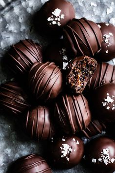

Chocolate is a food made from roasted and ground cocoa beans that can be a liquid, solid, or paste, either on its own or as a flavoring in other foods. The cacao tree has been used as a source of food for at least 5,300 years, starting with the Mayo-Chinchipe culture in what is present-day Ecuador. Later, Mesoamerican civilizations consumed cacao beverages, of which one, chocolate, was introduced to Europe in the 16th century.
Here is the link to buy Ferrero: ferrero/amazon.com
| Chocolate Brand | Type | Origin |
|---|---|---|
| Cadbury Dairy Milk | Milk Chocolate | India |
| Amul Chocolate | Dark Chocolate | India |
| Mason & Co | Artisanal Chocolate | India |
Lindt Home of Chocolate, located in Kilchberg, Switzerland, offers an immersive experience celebrating Swiss chocolate and Lindt's heritage. Visitors can explore the history of chocolate through interactive exhibits, admire the 9-meter tall chocolate fountain, and enjoy tastings of Lindt chocolates. The center also features a large chocolate shop, chocolate-making workshops led by expert chocolatiers, and a café serving chocolate treats. It’s an ideal destination for chocolate lovers, combining education and indulgence
Watch this Video about Lindt Home of Chocolate, Factory Tour: